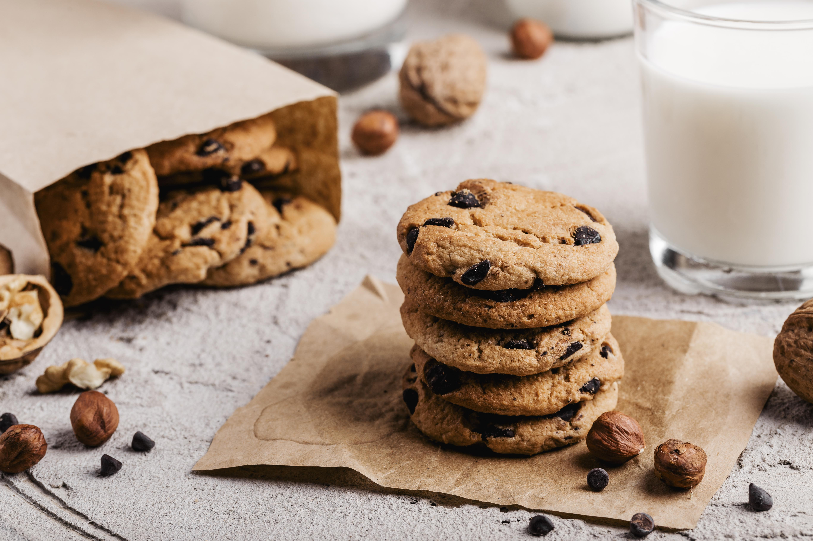

Cinnamon cookies

This delicious cinnamon cookies will warm you up from the bottom of your
heart in those long long winters. Perfect for sharing with friends and
family, or binge eating them alone in your room watching a movie, or a
whole season.
Ingredients
- Butter: 125gr
- Sugar: 150gr
- Flour: 200gr
- Eggs: 1
- Powdered cinnamon: A tea spoon
Instructions
- Preheat the oven to 180°C.
- Mix the butter and the sugar until it´s creamy.
- Add the eggs and mix it well.
- Add the flour and the cinnamon and mix it well.
-
Make small balls with the dough and put them evenly spread on a tray.
- Bake for 10 - 15 minutes until bottom starts to golden.
Done! Enjoy!
Home